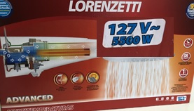
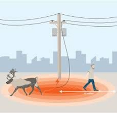

Em virtude do atual cenário global, percebemos que a eletricidade está cada vez mais presente na vida das pessoas e que esse campo tecnológico vem evoluindo constantemente. Por conta disso, é importante que todos tenham noções básicas sobre esse tema, visando minimizar a ocorrência de acidentes e outros problemas. Acreditamos que através do conhecimento a segurança das pessoas e de seu bens pode ser garantida. É necessário ressaltar, que de acordo com um estudo feito pela ABRACOPEL (Associação Brasileira de Conscientização para os Perigos da Eletricidade), no ano de 2021 cerca de 752 acidentes e 402 mortes foram registrados no Brasil. Já no ano de 2022 em concordância com estudos publicados no portal Jornal Hoje mais de 853 acidentes foram registrados no nosso país, deste total, em cerca de 66% deles a vítima foi a óbito em razão de ferimentos graves. Sob a perspectiva dos dados abordados acima, é importante notar que a região brasileira mais afetada, de acordo com a Revista Mundo elétrica, é o Nordeste que engloba cerca de 43% dos caso. Do ponto de vista humanitário esses dados mostram que o panorama é extremamente preocupante e comprova-se a hipótese de que com o acesso adequado a informação alguns acidentes envolvendo eletricidade poderiam ser evitados. Considerando esses fatores, nosso intuito ao longo deste trabalho é descrevere propor procedimentos com viés educacional a serem feitos e medidas protetivas que visam minimizar os riscos de acidentes elétricos, podendo ser eles por conta de fios mal isolados, falta de dispositivos de proteção, descargas atmosféricas, problemas nas redes de distribuição, entre outros.
O dimensionamento de cabos elétricos envolve diversos fatores, como: corrente elétrica, queda de tensão, tipo de condutor, temperatura ambiente, entre outros. Para fazer um dimensionamento correto e seguro, é necessário seguir as diretrizes de proteção pelas normas específicas do país, a norma ABNT NBR 5410.
De uma forma simples seguimos o cálculo em função da formula (P = V * I)
O que presenciamos em vários locais são pessoas desinformadas,ou sem conhecimento para evitar acidentes. Para o básico sempre devemos seguir a tabela de cabos proveniente da norma NBR5410 para adequação do circuito elétrico. Exemplo: Quando temos um chuveiro de Potência 5500w devemos atentar para o dimensionamento dos cabos e disjuntor.
Logo temos uma Corrente de 43,3 A.
Segundo a norma devemos utilizar o cabo de 10mm² e disjuntor aproximado. Isso ocorre para todos os equipamentos que possuímos. Como exemplo de equipamentos que mais consomem, temos: Fornos Elétricos, Secadoras, Aquecedores, Chuveiros, Micro-ondas, Cooktops, Entre outros...
O mesmo ocorre para tomadas, caso o equipamento tenha um maior consumo é necessário verificar as especificações para instalação, maioria das Air Fryers necessitam de tomadas 20A, sendo assim não se deve utilizar adaptadores.Seguindo a norma, conceitos básicos, e lendo os manuais conseguimos prevenir acidentes.
Normalmente este fenômeno é causado por um curto-circuito. Pode ocorrer devido a uma falha técnica do equipamento elétrico ou um desgaste natural, mas também pode ser utilizado como princípio de funcionamento de alguns equipamentos, como: lâmpadas, fornos e até mesmo em vela de ignição veicular, porém por ter uma enorme potência, em alguns casos podem representar um grande perigo, causando desde ferimentos graves a óbitos nas pessoas atingidas, dessa forma alguns cuidados devem ser tomados, mesmo sendo quase impossível prever um arco elétrico podemos tomar algumas medidas que podem impedir o acontecimento indesejado desse fenômeno, como:
No caso das indústrias e de suma importância que, todos saibam o Limite de Aproximação Segura (LAS) obtidos através do “cálculo de energia incidente” que envolve desde o modo de operação do sistema até a distância segura de aproximação, o nível seguro de uma energia incidente proveniente de um arco-elétrico para não gerar danos as pessoas próximas são, de 1,2 cal/cm2 (De acordo com a norma NFPA 70E) porém é importante ressaltar que as distâncias seguras podem variar dependendo do contexto local, acima desse valor devem ser calculada a distância segura seguindo todos os protocolos de segurança previsto nas normas.
Seguindo as normas, conceitos básicos, e lendo os manuais conseguimos evitar acidentes.
A interação entre veículos e redes elétricas é um desafio significativo em nosso cotidiano. Acidentes envolvendo veículos e infraestruturas elétricas podem resultar em danos graves, lesões e, em alguns casos, até mesmo perdas de vidas. Para evitar tais tragédias, é crucial entender o conceito de tensão de passo e seguir procedimentos de segurança rigorosos.
* Tensão de Passo:
A tensão de passo é um fator crítico em acidentes que envolvem veículos e redes elétricas. Ela se refere à diferença de potencial elétrico entre os membros do corpo de uma pessoa quando ambos tocam simultaneamente partes condutoras de um veículo e estruturas energizadas. Esta tensão é resultado da eletricidade fluindo através do veículo e pode ser extremamente perigosa, pois pode causar choques elétricos graves.
A segurança nas proximidades de redes elétricas é uma responsabilidade compartilhada entre motoristas, empresas de serviços públicos e órgãos reguladores. Entender os perigos da tensão de passo e seguir procedimentos de segurança adequados pode salvar vidas e prevenir acidentes trágicos envolvendo veículos e eletricidade.

O IDR (Interruptor Diferencial Residual) é um dispositivo de proteção contra fuga de corrente ou choques elétricos, mais muitas pessoas conhece este equipamento como DR.
Vale a pena ressaltar que o DR funciona como um interruptor automático que desenergiza o circuito imediatamente quando perceber uma fuga de corrente. Exemplo: DR com corrente de 30mA, ele só vai desarmar se a diferença entre a corrente nos terminais for igual ou maior que estes 30mA. O objetivo desse dispositivo é a proteção de pessoas contra choque elétrico, lembrando que o DR é obrigatório nas instalações residenciais pela norma NBR 5410.
O disjuntor DR também pode detectar fugas de corrente por fios desencapados que estejam conduzindo, ou estejam em contato com carcaças metálicas que proporcionam um caminho alternativo para a terra.
Outro benefício do DR é que também pode ajudar a reduzir a conta de energia, visto que ele atua na fuga de corrente, sendo assim sempre que houver fuga de corrente ele irá desarmar o circuito, e assim a pessoa pode chamar um técnico para verificar o motivo dessa fuga de corrente em sua residência, deste modo controlando a situação, reduzindo o consumo e possíveis riscos de acidentes. Podemos observar na ilustração abaixo como é feito a instalação do dispositivo DR também nesse circuito termos o Dispositivo DPS ( Dispositivo de Proteção Contra Surtos Elétricos) que também é Obrigatório na instalação residencial pela norma 5410.
Os primeiros socorros que devem ser executados antes do atendimento da emergência.
Você deve desligar a fonte de energia. E lembre-se não toque na vítima de maneira nenhuma. Afaste a pessoa da fonte elétrica que provocou o choque, mas porém o faça com o auxílio de materiais que não conduzem eletricidade como madeira ou borracha.
Certifique-se a pessoa está acordada e respirando, se estiver consciente, acalme-a até a equipe da emergência chegar, caso esteja inconsciente, mas respirando, deite-a de lado e a coloque em uma posição lateral de segurança, por fim, ela estiver inconsciente e não respirando, realize uma massagem cardíaca e a respiração boca a boca. Repita o passo anterior até o atendimento de emergência chegar.
A maior complicação do choque elétrico é quando leva a vítima a óbito, isso acontece quando ela é atingida por uma corrente extremamente alta. Por tanto, existem outros efeitos colaterais, que são eles:
A formação básica e profissional, configura uma ferramenta indispensável no combate à desinformação, ao improviso e descaso com projetos elétricos. Pois, a sociedade quando não informada e consciente sobre a importância da prevenção, desconhece parte das responsabilidades que lhes são competentes, infligindo às normas técnicas e promovendo condições de periculosidade. A educação formal no Brasil passa pela Educação Infantil, Básica (Ensino Fundamental e Médio/Técnico), Superior e Pós-Graduação. Para cada nível compete um programa adaptado as diferentes realidades do país. Por exemplo, na Educação Básica, o estudo da matéria Eletricidade, está previsto apenas no currículo da disciplina Física relativo à 3ª série do Ensino Médio. Nesse contexto, foi elaborado um projeto.
Que se designa uma Educação Básica, na realização de aulas sobre o Tema “Equipamentos Elétricos, Segurança e Efeitos Fisiológicos do Choque Elétrico”. Além de colaborar com o ensino e aprendizagem de Física, visa proporcionar complementos básicos para a formação do profissional de Engenharia Elétrica pertinente às necessidades de cuidados e proteção no uso consciente da energia elétrica. Assim como, obter informações que ajudem a mensurar as necessidades de adequação das instalações elétricas, respeitando às particularidades socioambientais em cada situação. É oportuno acrescentar que o aprofundamento do tema amplia os aspectos transdisciplinares preconizados pelos parâmetros curriculares nacionais, por vez fundamentados e dentre outros princípios, na corresponsabilidade pela vida e responsabilidade social.
Como sabemos, a energia elétrica é fundamental para as necessidades básicas do nosso dia, com ela temos acesso a uma infinidade de recursos, que vão desde acender uma lâmpada e aquecer um alimento no micro-ondas a estar conectado à internet. Porém, as distribuidoras de energia tem grandes desafios para fazer com que a energia elétrica chegue com qualidade e segurança para as casas de todos os clientes, e com isso investe em novas tecnologias para melhorar o processo de fornecimento desse importante recurso. Práticas de melhorias na rede elétrica são constantemente observadas e praticadas pelas concessionárias, com foco em ações preventivas/preditivas, equipamentos são instalados na rede, como sensores, dispositivos de segurança, além de centrais de monitoramento em tempo real, que monitoram qualquer intercorrência no fornecimento de energia, bem como a possibilidade de presença de cabos no solo. No tocante ao tema central desse tópico, cabos elétricos energizados em contato com o solo, temos como orientação dicas fundamentais de segurança que vamos abordar nos tópicos a seguir. Os cabos elétricos podem vir a romper por alguns motivos, são eles:
O Brasil é o país com a maior incidência de raios em todo o planeta, chegando a cerca de 50 milhões por ano. Essas descargas elétricas podem ter até 30 mil amperes, mil vezes mais que a corrente elétrica de chuveiro elétrico. Segundo o Instituto Nacional de Pesquisas Espaciais (INPE) em 2017 ocorreram, em média, 111 mortes e cerca de 500 pessoas foram vitimadas no país por acidentes desta natureza. Entre 20 e 30% das pessoas atingidas morrem, a maioria por parada cardíaca e respiratória. Aproximadamente 70% dos sobreviventes sofrem uma série de sequelas psicológicas e orgânicas. Para evitar estes casos e diminuir o número de vítimas é necessário tomar cuidados durante chuvas e tempestades, principalmente na primavera e verão, período de maior incidência do fenômeno.
A partir desse ponto você encontrará perguntas e respostas com boas práticas de como se comportar em caso de incidência de descargas atmosféricas.
Procure uma edificação publica para se abrigar, pois, para se liberar essas estruturas é exigido um sistema de proteção contra descargas atmosféricas (SPDA) instalado ou se abrigue em algum veículo. Caso não seja possível, abrigue-se no ponto mais baixo porque a descarga sempre percorre a menor distância entre o ponto de descarga e o solo.
Sim. Principalmente em uma área descampada e fora do alcance dos para-raios. Deve-se ter em mente que o raio sempre procura o caminho de menor “resistência” entre a nuvem e a terra. Os pontos altos e pontiagudos favorecem o estabelecimento desse “caminho”. Logo, nesse cenário, o indivíduo poderá receber uma descarga elétrica. Evite essa condição.
Se a pessoa estiver ao ar livre no caso de tempestades acompanhadas de descargas atmosféricas, deve procurar um abrigo seguro, longe de árvores e estruturas metálicas. Caso esteja dirigindo, pare em local elevado, por ser livre de inundações, mas longe de árvores, redes elétricas e rios.
Durante as tempestades elétricas, com a incidência de raios, é prudente que as pessoas tirem todos os aparelhos domésticos da tomada, uma vez que, caso aconteça uma descarga elétrica nas linhas de distribuição, a energia dessa pode ser transmitida para os equipamentos. Caso sua instalação possua DPS (dispositivos de proteção contra surto de tensão) no painel de distribuição, este dispositivo fará a proteção, desviará a corrente elétrica diretamente para o sistema de aterramento protegendo os equipamentos eletroeletrônicos.
No caso dos veículos automotores e aeronaves, as estruturas possuem uma construção típica formando uma gaiola de Faraday, fazendo com que a descarga passe nas estruturas até o solo, protegendo as pessoas que estão dentro do veículo. Não toque nas partes metálicas, não feche as janelas e não ligue o rádio. Permaneça no interior do veículo após o evento, pois ainda sim, existe o risco de tensão de passo, que basicamente seria a corrente elétrica que circularia pela diferença de potencial entre os seus dois pés em uma passada. Isso é possível, pois a descarga se dissipada em gradiente de potencial, começando com uma circunferência pequena e aumentando gradativamente no tempo, até a dissipação total no solo. Desta forma é prudente aguardar alguns minutos antes de sair do veículo. Caso, esteja correndo risco iminente de vida, desembarque do carro na ponta de apenas um dos pés e percorra a maior distância possível do veículo para depois se apoiar sobre os dois pés novamente. Fazendo este procedimento diminui-se a possibilidade de choque elétrico ocasionado pela tensão de passo.
Evite de todas as formas o contato com superfícies metálicas, nestes casos podem ocorrer a tensão de toque, o choque elétrico ocasionado pelo contato com uma estrutura metálica com potencial elétrico desconhecido. Podendo gerar uma lesão ou morte. Portanto evite!